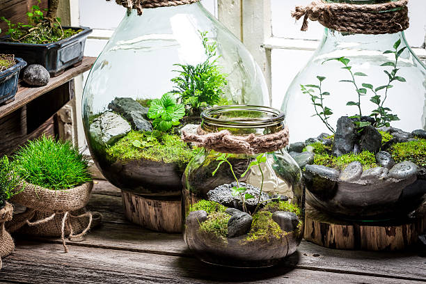
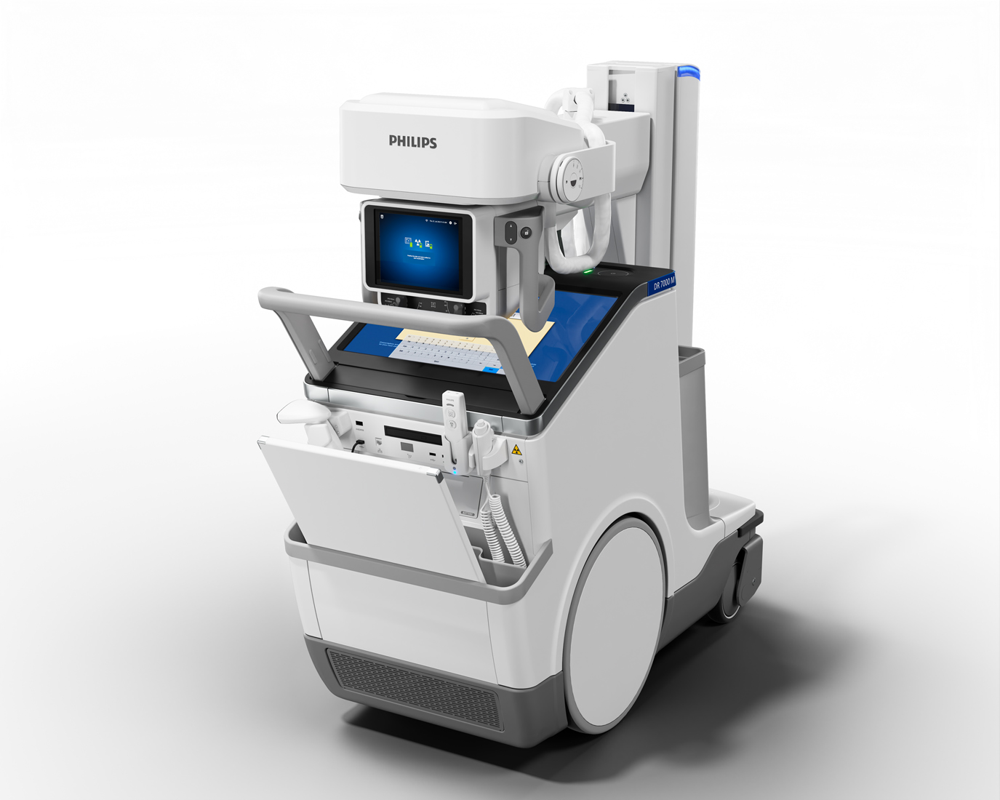
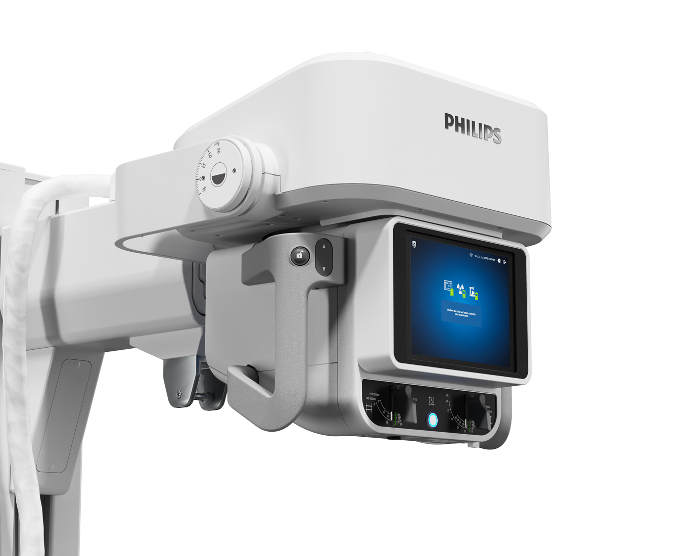
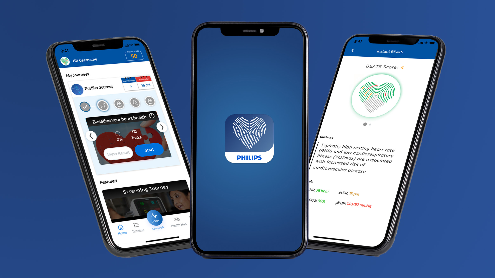
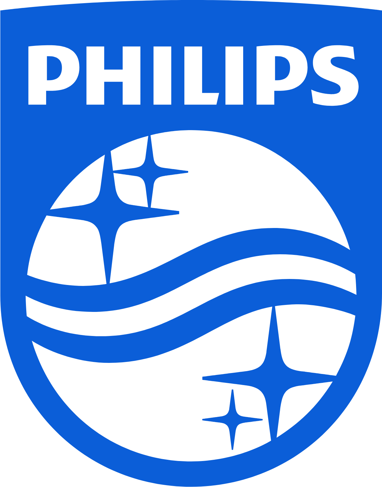
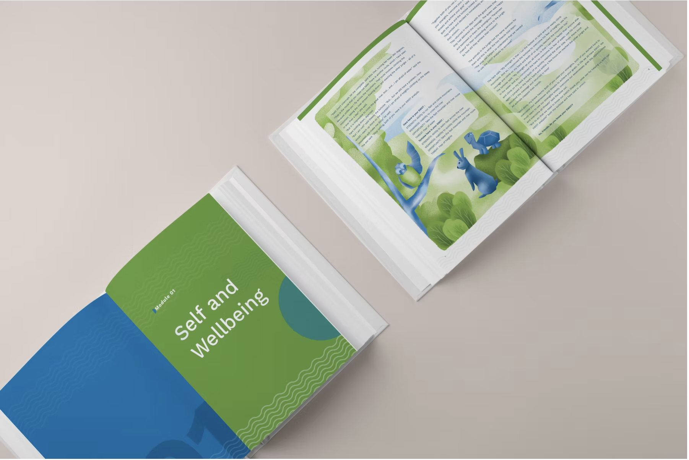
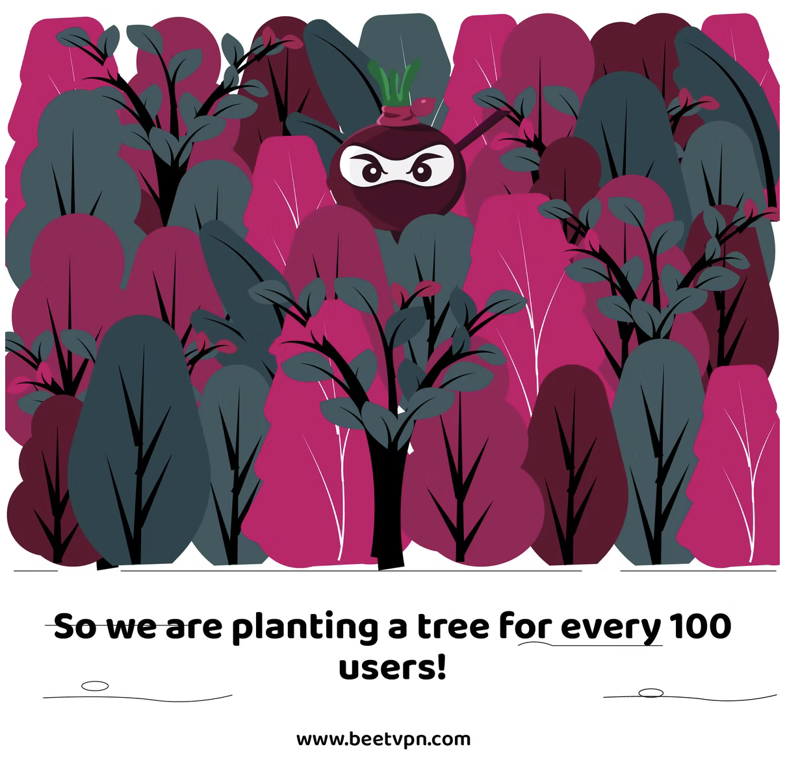
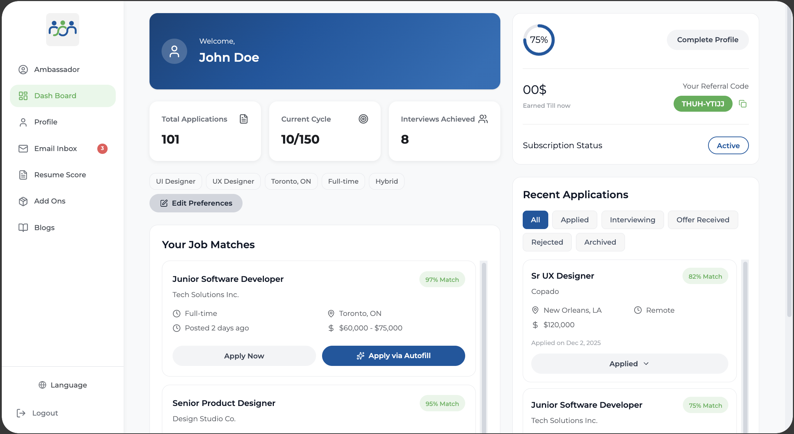

✦ Award winning
✦ Award winningPhilips Guided Health Service
Heart Health Monitoring App
iF Design Award – UXContribution: mood & energy visual design.
Dennis Pious · UX & Interaction Design
Design is the sweet spot between Science and Art.
Terrariums and aquascapes are nature's design systems in miniature, my sandbox for learning from the best.
I believe the most resilient designs are self-sustaining systems, inspired by the balance and restraint found in nature.

✦ Award winningHeart Health Monitoring App
iF Design Award – UX
✦ Award winningMobile X-ray System
iF Design Award – Product UXSelected portfolio
A collection of design systems, interfaces, illustrations, and visual identities.

01Modernized 200+ ISO-compliant clinical icons for mobile X-ray workflows.
Role: Visual Design · IconographyView Case Study →
02Designed visual systems for mood, energy, and heart-health tracking.
Role: UX Design · Visual DesignView Case Study →
03Built scalable icons, pictograms, and clinical illustration guidelines.
Role: Design System · IllustrationView Case Study →
04Designed multi-level curriculum books with color-coded visual systems.
Role: Visual Design · IllustrationView Case Study →
05Playful visual language and social content for a privacy-first VPN.
Role: Visual Design · CampaignView Case Study →
06Reimagined a recruitment platform with AI-powered workflows.
Role: UX Design · Product StrategyView Case Study →A little about me
I’m Dennis, a UX and interaction designer creating thoughtful digital products, visual systems, and experiences.
My work brings together systems thinking, curiosity, and a deep appreciation for the small details that make an experience feel clear and human.
Notes in progress
Explorations at the intersection of science, design & behavior.
This is where future articles, experiments, and observations will live.
Let’s make something thoughtful
Have a project, opportunity, or idea to discuss? I’d love to hear from you.
Send an email